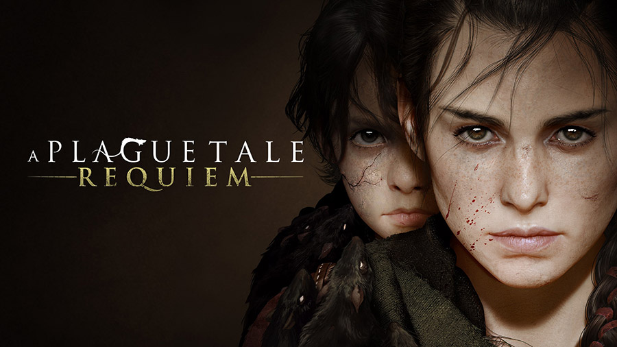

A Plague Tale: Requiem

У 2019 році французькі розробники з Asobo Studio випустили A Plague Tale: Innocence — несподівано сильну та атмосферну гру про хлопчика, його сестру, чуму та щурів в антуражі похмурого Середньовіччя. Якщо ви раптом пропустили цей проєкт, то обов'язково спробуйте і, швидше за все, будете приємно здивовані історією, персонажами, ігровим процесом та графікою.Після роботи над A Plague Tale: Innocence Asobo Studio випустила Microsoft Flight Simulator і паралельно взялася за продовження A Plague Tale, але тепер із підзаголовком Requiem.
Друга частина продовжить розповідь про брата та сестру Хьюго та Аміції. Творці також урізноманітнять гру геймплейно, додадуть нових локацій та поділять сюжет на окреме проходження за двох різних героїв. A Plague Tale: Requiem виходить у 2022 році, але поки що без точної дати. Гра з'явиться на ПК, PS5, Xbox Series та Nintendo Switch.